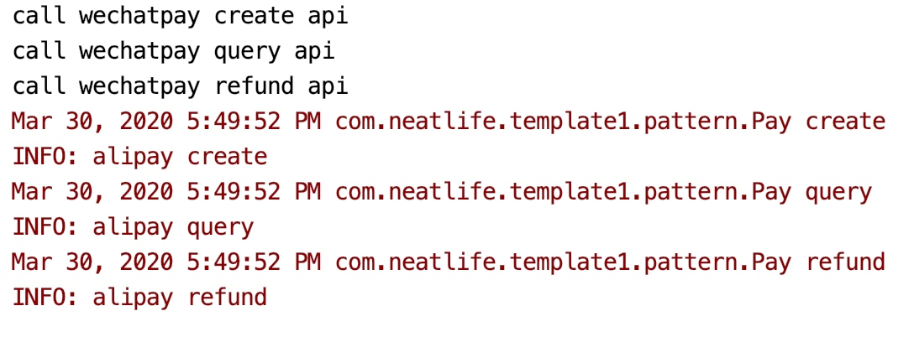
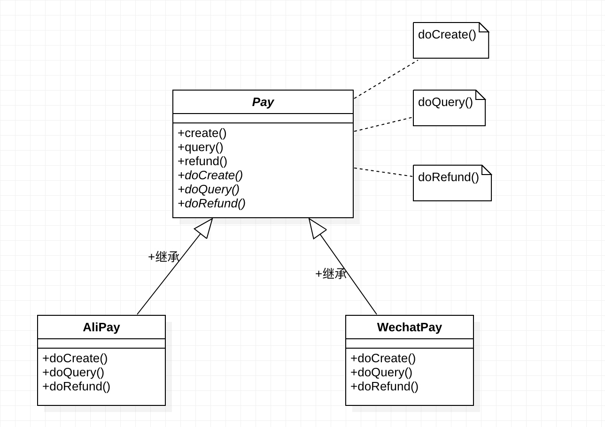

<!doctype html>
<html class="no-js" lang="en">
  <head>
    <meta charset="utf-8" />
    <meta name="viewport" content="width=device-width, initial-scale=1.0" />
    <title>
    
  11/24 设计模式之模板方法模式 Template Method Pattern - xiaolin's blog
  
  </title>
  
  
  <link href="atom.xml" rel="alternate" title="xiaolin's blog" type="application/atom+xml">
    <link rel="stylesheet" href="asset/css/foundation.min.css" />
    <link rel="stylesheet" href="asset/css/docs.css" />
    <link rel="shortcut icon" href="favicon.ico">
    <script src="asset/js/vendor/modernizr.js"></script>
    <script src="asset/js/vendor/jquery.js"></script>
  <script src="asset/highlightjs/highlight.pack.js"></script>
  <link href="asset/highlightjs/styles/github.css" media="screen, projection" rel="stylesheet" type="text/css">
  <script>hljs.initHighlightingOnLoad();</script>
<script type="text/javascript">
  function before_search(){
    var searchVal = 'site:neatlifecoco.com ' + document.getElementById('search_input').value;
    document.getElementById('search_q').value = searchVal;
    return true;
  }
</script>
  </head>
  <body class="antialiased hide-extras">
    
    <div class="marketing off-canvas-wrap" data-offcanvas>
      <div class="inner-wrap">


<nav class="top-bar docs-bar hide-for-small" data-topbar>


  <section class="top-bar-section">
  <div class="row">
      <div style="position: relative;width:100%;"><div style="position: absolute; width:100%;">
        <ul id="main-menu" class="left">
        
        <li id=""><a target="_self" href="index.html">about</a></li>
        
        <li id=""><a target="_self" href="all.html">blog</a></li>
        
        <li id=""><a target="_self" href="archives.html">archive</a></li>
        
        <li id=""><a target="_self" href="tools.html">tools</a></li>
        
        <li id=""><a target="_self" href="pro.html">pros</a></li>
        
        <li id=""><a target="_self" href="pub.html">press</a></li>
        
        <li id=""><a target="_self" href="paper.html">paper</a></li>
        
        </ul>

        <ul class="right" id="search-wrap">
          <li>
<form target="_blank" onsubmit="return before_search();" action="https://google.com/search" method="get">
    <input type="hidden" id="search_q" name="q" value="" />
    <input tabindex="1" type="search" id="search_input"  placeholder="Search"/>
</form>
</li>
          </ul>
      </div></div>
  </div>
  </section>

</nav>

        <nav class="tab-bar show-for-small">
  <a href="javascript:void(0)" class="left-off-canvas-toggle menu-icon">
    <span> &nbsp; xiaolin's blog</span>
  </a>
</nav>

<aside class="left-off-canvas-menu">
      <ul class="off-canvas-list">
        
        <li><a target="_self" href="index.html">about</a></li>
        
        <li><a target="_self" href="all.html">blog</a></li>
        
        <li><a target="_self" href="archives.html">archive</a></li>
        
        <li><a target="_self" href="tools.html">tools</a></li>
        
        <li><a target="_self" href="pro.html">pros</a></li>
        
        <li><a target="_self" href="pub.html">press</a></li>
        
        <li><a target="_self" href="paper.html">paper</a></li>
        

    <li><label>Categories</label></li>

        
            <li><a href="macios.html">mac&ios</a></li>
        
            <li><a href="lc.html">leetcode</a></li>
        
            <li><a href="security.html">安全</a></li>
        
            <li><a href="business.html">业务</a></li>
        
            <li><a href="source-code.html">源码分析</a></li>
        
            <li><a href="redis.html">Redis</a></li>
        
            <li><a href="apache-nginx.html">Apache/Nginx</a></li>
        
            <li><a href="spring-boot.html">Spring Boot</a></li>
        
            <li><a href="pm.html">项目管理</a></li>
        
            <li><a href="sketch.html">sketch</a></li>
        
            <li><a href="sql.html">SQL</a></li>
        
            <li><a href="job-scheduler.html">任务调度</a></li>
        
            <li><a href="design-pattern.html">设计模式</a></li>
        
            <li><a href="mq.html">消息队列</a></li>
        
            <li><a href="rpc.html">RPC</a></li>
        
            <li><a href="bigfrontend.html">大前端</a></li>
        
            <li><a href="iOS.html">iOS</a></li>
        
            <li><a href="laravel.html">LARAVEL</a></li>
        
            <li><a href="tcp-ip.html">TCP/IP</a></li>
        
            <li><a href="uml.html">UML</a></li>
        
            <li><a href="service-mesh.html">SERVICE MESH</a></li>
        
            <li><a href="ci-cd.html">CI/CD</a></li>
        
            <li><a href="ops.html">OPS</a></li>
        
            <li><a href="linux.html">LINUX</a></li>
        
            <li><a href="system-programming.html">系统编程</a></li>
        
            <li><a href="aws.html">AWS</a></li>
        
            <li><a href="lua.html">LUA</a></li>
        
            <li><a href="git.html">GIT</a></li>
        
            <li><a href="js.html">js</a></li>
        
            <li><a href="java.html">JAVA</a></li>
        
            <li><a href="monitor.html">监控</a></li>
        
            <li><a href="vim.html">VIM</a></li>
        
            <li><a href="php.html">PHP</a></li>
        
            <li><a href="openresty.html">OpenResty</a></li>
        
            <li><a href="swoole.html">SWOOLE</a></li>
        
            <li><a href="ons.html">消息队列</a></li>
        
            <li><a href="gdb.html">GDB</a></li>
        
            <li><a href="specification.html">规范</a></li>
        
            <li><a href="3-minutes.html">三分钟系列</a></li>
        
            <li><a href="1-pic.html">一图胜千言</a></li>
        
            <li><a href="account-system.html">帐号系统</a></li>
        
            <li><a href="interview.html">面试题</a></li>
        
            <li><a href="yii.html">Yii/Yii2</a></li>
        
            <li><a href="python.html">python</a></li>
        
            <li><a href="go.html">GO</a></li>
        
            <li><a href="ml.html">机器学习</a></li>
        
            <li><a href="emacs.html">emacs</a></li>
        
            <li><a href="bi.html">商业智能</a></li>
        
            <li><a href="mac.html">mac</a></li>
        
            <li><a href="editor.html">编辑器</a></li>
        
            <li><a href="productive-soft.html">生产力工具</a></li>
        
            <li><a href="driver-license.html">驾照</a></li>
         

      </ul>
    </aside>

<a class="exit-off-canvas" href="#"></a>


        <section id="main-content" role="main" class="scroll-container">
        
       

 <script type="text/javascript">
  $(function(){
    $('#menu_item_index').addClass('is_active');
  });
</script>
<div class="row">
  <div class="large-8 medium-8 columns">
      <div class="markdown-body article-wrap">
       <div class="article">
          
          <h1>11/24 设计模式之模板方法模式 Template Method Pattern</h1>
     
        <div class="read-more clearfix">
          <span class="date">2020/3/26</span>

          <span>posted in&nbsp;</span> 
          
              <span class="posted-in"><a href='design-pattern.html'>设计模式</a></span>
          
              <span class="posted-in"><a href='java.html'>JAVA</a></span>
           
         
          <span class="comments">
            

            
          </span>

        </div>
      </div><!-- article -->

      <div class="article-content">
      <p>类别：行为型设计模式</p>

<p>目的：定一个代码模板，确保代码执行时会把模板中的代码一并执行，降低漏写约定代码的可能</p>

<p>完整代码参考：<a href="https://1drv.ms/u/s!AquRvPzqx59Ri3796seig6pm77ZO?e=gYrllO">https://1drv.ms/u/s!AquRvPzqx59Ri3796seig6pm77ZO?e=gYrllO</a></p>

<h2 id="toc_0">典型场景</h2>

<p>这里拿集成支付网关举例，比如业务中对支付的抽象如下</p>

<table>
<thead>
<tr>
<th>方法</th>
<th>作用</th>
</tr>
</thead>

<tbody>
<tr>
<td>create</td>
<td>发起支付</td>
</tr>
<tr>
<td>query</td>
<td>查询订单</td>
</tr>
<tr>
<td>refund</td>
<td>退款</td>
</tr>
</tbody>
</table>

<p>在上面执行的每一步进行日志记录</p>

<p>对应的接口Pay.java参考如下</p>

<pre><code class="language-java">public interface Pay {
    void create();

    void query();

    void refund();
}
</code></pre>

<p>实现一个支付方式，比如支付宝支付，<strong>在每一个支付步骤进行日志记录</strong>，参考如下：</p>

<span id="more"></span><!-- more -->

<pre><code class="language-java">import java.util.logging.Logger;

public class AliPay implements Pay {
    Logger logger = Logger.getLogger(Pay.class.getName());

    @Override
    public void create() {
        logger.info(&quot;alipay create&quot;);
        System.out.println(&quot;call alipay create api&quot;);
    }

    @Override
    public void query() {
        logger.info(&quot;alipay query&quot;);
        System.out.println(&quot;call alipay query api&quot;);
    }

    @Override
    public void refund() {
        logger.info(&quot;alipay refund&quot;);
        System.out.println(&quot;call alipay refund api&quot;);
    }
}
</code></pre>

<p>上面代码由一个人维护是ok的，但是如果由另一个人新增一个支付（即实现另一个Pay接口）比如微信支付，可能无法保证日志记录相关代码会被编码了，这种情况就可以使用模板方法模式</p>

<h2 id="toc_1">模式实现</h2>

<p>Pay接口修改抽象类，并把日志记录相关代码移入Pay抽象类中，参考如下：</p>

<pre><code class="language-java">public abstract class Pay {
    Logger logger = Logger.getLogger(Pay.class.getName());

    public void create() {
        logger.info(&quot;alipay create&quot;);
        doCreate();
    }

    public void query() {
        logger.info(&quot;alipay query&quot;);
        doQuery();
    }

    public void refund() {
        logger.info(&quot;alipay refund&quot;);
        doRefund();
    }

    abstract protected void doCreate();

    abstract protected void doQuery();

    abstract protected void doRefund();
}
</code></pre>

<p>可以看到</p>

<ol>
<li>把Pay接口改为Pay抽象类后，不改变这个抽象类对外暴露的接口</li>
<li>日志记录代码编码在了抽象类中</li>
<li>具体发起支付的相关代码抽象在了doxxx方法中</li>
<li>这样在实现一个新的支付方式时，实现protected的doxxx系列方法记录，调用方使用create, query, refund进行支付操作</li>
<li>确保日志记录代码(模板代码)一定会被执行</li>
</ol>

<p>上面这个Pay抽象类中的create, query, refund中会被执行的日志记录相关代码即使模板，doxxx系列方法就是需要用户填充到模板中的代码</p>

<p>比如实现一个新的微信支付，参考如下</p>

<pre><code class="language-java">public class WechatPay extends Pay {
    @Override
    public void doCreate() {
        System.out.println(&quot;call wechatpay create api&quot;);
    }

    @Override
    public void doQuery() {
        System.out.println(&quot;call wechatpay query api&quot;);
    }

    @Override
    public void doRefund() {
        System.out.println(&quot;call wechatpay refund api&quot;);
    }
}
</code></pre>

<p>可以看到实现一个新的微信支付不用关心前置的日志操作了</p>

<p>对应的调用代码参考如下：</p>

<pre><code class="language-java">var wechatPay = new WechatPay();
wechatPay.create();
wechatPay.query();
wechatPay.refund();
</code></pre>

<p>执行效果如下：<br/>
<br/>
可以看到模板代码执行了</p>

<h2 id="toc_2">UML</h2>

<p></p>

<h2 id="toc_3">为什么组合优于继承</h2>

<p>这里模板方法模式使用了抽象类Pay来定义模板代码，抽象类的使用需要通过继承来实现比如<code>WechatPay extends Pay</code>，因为很多语言是单继承的，java也是，这个时候WechatPay因为已经使用了继承，就不能再继承另一个类来增强其自生的功能了，即这种情况 组合优于继承，实际编码中，大部分都是这种情况，即变成了<strong>组合优于继承</strong>这种说法</p>

<h2 id="toc_4">为什么模板方法模式更好</h2>

<ol>
<li>通用模板代码只需在抽象类中维护一份</li>
<li>确保模板代码执行了，确保收集到了需要的数据</li>
</ol>

<h2 id="toc_5">一些注意的点</h2>

<p>模板代码这种存在部分具体实现，部分抽象实现的代码适合使用抽象类来实现</p>

<h2 id="toc_6">参考资料</h2>

<ol>
<li><a href="https://www.geeksforgeeks.org/template-method-design-pattern/">https://www.geeksforgeeks.org/template-method-design-pattern/</a></li>
</ol>


    

      </div>

      <div class="row">
        <div class="large-6 columns">
        <p class="text-left" style="padding:15px 0px;">
      
          <a href="15853623269736.html" 
          title="Previous Post: 12/24 设计模式之适配器模式 Adapter Pattern">&laquo; 12/24 设计模式之适配器模式 Adapter Pattern</a>
      
        </p>
        </div>
        <div class="large-6 columns">
      <p class="text-right" style="padding:15px 0px;">
      
          <a  href="15850081985199.html" 
          title="Next Post: 10/24 设计模式之桥接模式 Bridge Pattern">10/24 设计模式之桥接模式 Bridge Pattern &raquo;</a>
      
      </p>
        </div>
      </div>
      <div class="comments-wrap">
        <div class="share-comments">
          <script src="https://utteranc.es/client.js"
        repo="neatlife/neatlife.github.io"
        issue-term="pathname"
        theme="github-light"
        crossorigin="anonymous"
        async>
</script>


          

          
        </div>
      </div>
    </div><!-- article-wrap -->
  </div><!-- large 8 -->


 <div class="large-4 medium-4 columns">
  <div class="hide-for-small">
    <div id="sidebar" class="sidebar">
          <div id="site-info" class="site-info">
            
                <h1>xiaolin's blog</h1>
                <div class="site-des">core tech share blog</div>
                <div class="social">
                  <a target="_blank" class="juejin" href="https://juejin.im/user/5c409f86e51d4551c88027a2/posts" title="Juejin">juejin</a>


<a target="_blank" class="github" target="_blank" href="https://github.com/neatlife" title="GitHub">GitHub</a>

  <a target="_blank" class="rss" href="atom.xml" title="RSS">RSS</a>
                
              	 </div>
          	</div>

             

              <div id="site-categories" class="side-item ">
                <div class="side-header">
                  <h2>Categories</h2>
                </div>
                <div class="side-content">

      	<p class="cat-list">
        
            <a href="macios.html"><strong>mac&ios</strong></a>
        
            <a href="lc.html"><strong>leetcode</strong></a>
        
            <a href="security.html"><strong>安全</strong></a>
        
            <a href="business.html"><strong>业务</strong></a>
        
            <a href="source-code.html"><strong>源码分析</strong></a>
        
            <a href="redis.html"><strong>Redis</strong></a>
        
            <a href="apache-nginx.html"><strong>Apache/Nginx</strong></a>
        
            <a href="spring-boot.html"><strong>Spring Boot</strong></a>
        
            <a href="pm.html"><strong>项目管理</strong></a>
        
            <a href="sketch.html"><strong>sketch</strong></a>
        
            <a href="sql.html"><strong>SQL</strong></a>
        
            <a href="job-scheduler.html"><strong>任务调度</strong></a>
        
            <a href="design-pattern.html"><strong>设计模式</strong></a>
        
            <a href="mq.html"><strong>消息队列</strong></a>
        
            <a href="rpc.html"><strong>RPC</strong></a>
        
            <a href="bigfrontend.html"><strong>大前端</strong></a>
        
            <a href="iOS.html"><strong>iOS</strong></a>
        
            <a href="laravel.html"><strong>LARAVEL</strong></a>
        
            <a href="tcp-ip.html"><strong>TCP/IP</strong></a>
        
            <a href="uml.html"><strong>UML</strong></a>
        
            <a href="service-mesh.html"><strong>SERVICE MESH</strong></a>
        
            <a href="ci-cd.html"><strong>CI/CD</strong></a>
        
            <a href="ops.html"><strong>OPS</strong></a>
        
            <a href="linux.html"><strong>LINUX</strong></a>
        
            <a href="system-programming.html"><strong>系统编程</strong></a>
        
            <a href="aws.html"><strong>AWS</strong></a>
        
            <a href="lua.html"><strong>LUA</strong></a>
        
            <a href="git.html"><strong>GIT</strong></a>
        
            <a href="js.html"><strong>js</strong></a>
        
            <a href="java.html"><strong>JAVA</strong></a>
        
            <a href="monitor.html"><strong>监控</strong></a>
        
            <a href="vim.html"><strong>VIM</strong></a>
        
            <a href="php.html"><strong>PHP</strong></a>
        
            <a href="openresty.html"><strong>OpenResty</strong></a>
        
            <a href="swoole.html"><strong>SWOOLE</strong></a>
        
            <a href="ons.html"><strong>消息队列</strong></a>
        
            <a href="gdb.html"><strong>GDB</strong></a>
        
            <a href="specification.html"><strong>规范</strong></a>
        
            <a href="3-minutes.html"><strong>三分钟系列</strong></a>
        
            <a href="1-pic.html"><strong>一图胜千言</strong></a>
        
            <a href="account-system.html"><strong>帐号系统</strong></a>
        
            <a href="interview.html"><strong>面试题</strong></a>
        
            <a href="yii.html"><strong>Yii/Yii2</strong></a>
        
            <a href="python.html"><strong>python</strong></a>
        
            <a href="go.html"><strong>GO</strong></a>
        
            <a href="ml.html"><strong>机器学习</strong></a>
        
            <a href="emacs.html"><strong>emacs</strong></a>
        
            <a href="bi.html"><strong>商业智能</strong></a>
        
            <a href="mac.html"><strong>mac</strong></a>
        
            <a href="editor.html"><strong>编辑器</strong></a>
        
            <a href="productive-soft.html"><strong>生产力工具</strong></a>
        
            <a href="driver-license.html"><strong>驾照</strong></a>
         
        </p>


                </div>
              </div>

              <div id="site-categories" class="side-item">
                <div class="side-header">
                  <h2>Recent Posts</h2>
                </div>
                <div class="side-content">
                <ul class="posts-list">
	      
		      
			      <li class="post">
			        <a href="16256216793335.html">html还原设计图开发心历路程</a>
			      </li>
		     
		  
		      
			      <li class="post">
			        <a href="16226333235156.html">用sketch原型工具3秒制作一个按钮</a>
			      </li>
		     
		  
		      
			      <li class="post">
			        <a href="16215677290066.html">三分钟制作一个iOS全局弹窗</a>
			      </li>
		     
		  
		      
			      <li class="post">
			        <a href="16081898834624.html">OSX使用代码代替storyboard构建项目，并添加NSSplitView组件</a>
			      </li>
		     
		  
		      
			      <li class="post">
			        <a href="16005640944829.html">linux系统编程之多进程和管道（pip）</a>
			      </li>
		     
		  
		      
		  
		      
		  
		      
		  
		      
		  
		      
		  
		      
		  
		      
		  
		      
		  
		      
		  
		      
		  
		      
		  
		      
		  
		      
		  
		      
		  
		      
		   
		  		</ul>
                </div>
              </div>
        </div><!-- sidebar -->
      </div><!-- hide for small -->
</div><!-- large 4 -->

</div><!-- row -->

 <div class="page-bottom clearfix">
  <div class="row">
   <p class="copyright">Copyright &copy; 2015
Theme used <a target="_blank" href="http://github.com">GitHub CSS</a>.
<span id="busuanzi_container_site_uv">访问<span id="busuanzi_value_site_uv"></span>人</span>/
        <span id="busuanzi_container_site_pv"><span id="busuanzi_value_site_pv"></span>次</span>
    </p>
  </div>
</div>

        </section>
      </div>
    </div>

  
    

    <script src="asset/js/foundation.min.js"></script>
    <script>
      $(document).foundation();
      function fixSidebarHeight(){
        var w1 = $('.markdown-body').height();
          var w2 = $('#sidebar').height();
          if (w1 > w2) { $('#sidebar').height(w1); };
      }
      $(function(){
        fixSidebarHeight();
      })
      $(window).load(function(){
          fixSidebarHeight();
      });
     
    </script>

    

<!-- Global site tag (gtag.js) - Google Analytics -->
<script async src="https://www.googletagmanager.com/gtag/js?id=UA-138141150-1"></script>
<script>
  window.dataLayer = window.dataLayer || [];
  function gtag(){dataLayer.push(arguments);}
  gtag('js', new Date());

  gtag('config', 'UA-138141150-1');
</script>

<canvas class="fireworks" 
        style="position: fixed; left: 0px; top: 0px; z-index: 99999999; pointer-events: none; width: 1158px; height: 916px;" 
        width="2316" 
        height="1832">
</canvas>
    <script src="asset/js/anime.min.js"></script>
    <script src="asset/js/fireworks.js"></script>
    <script async src="//busuanzi.ibruce.info/busuanzi/2.3/busuanzi.pure.mini.js"></script>
  </body>
</html>
